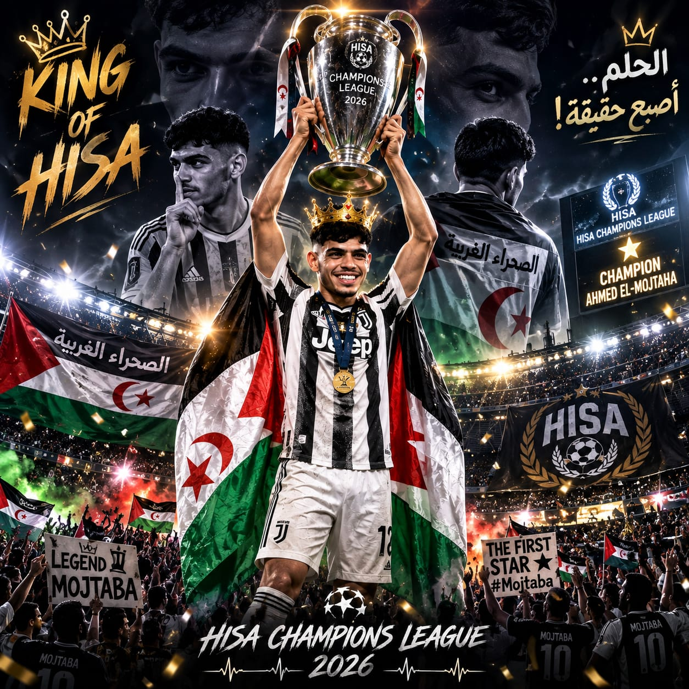

HISA Champions League 2026

Ahmed Almojtaba Wins the HISA Champions League 2026
The HISA Champions League 2026 is one of the strongest HISA tournaments, which witnessed many dramatic and exciting matches. The tournament ended with player Ahmed Almojtaba winning his first title.